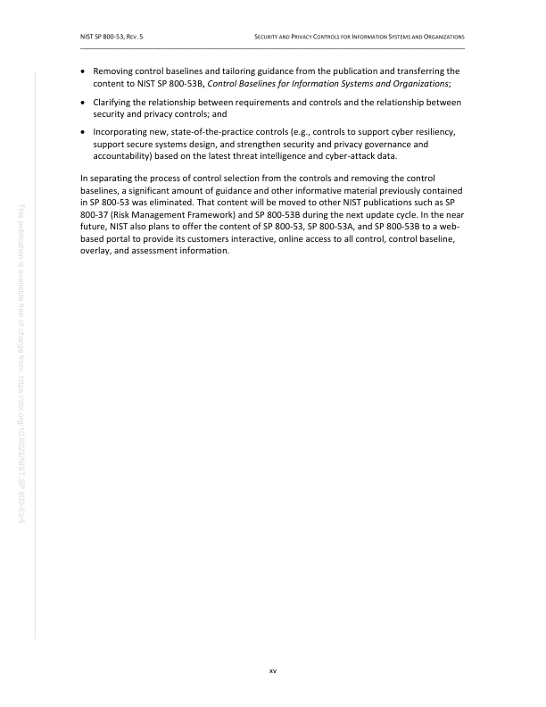
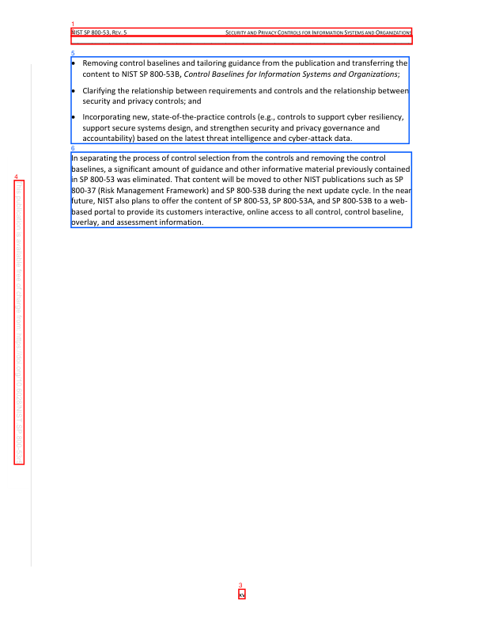

PDF Lab Second-Pass Page Review
Before Evidence


Selected Candidates
cand:p0017:0000:side_chromeside_chrome
{
"bbox": [
0.14705882352941177,
0.04473802296802251,
0.8507378272760927,
0.05821938948197798
],
"block_id": "actual:p17:block:0",
"block_index": 0,
"candidate_id": "cand:p0017:0000:side_chrome",
"confidence": 0.8,
"detection_reason": [
"block_type:header_footer_noise",
"preset_type:side_chrome",
"hardening_interest",
"boundary_geometry",
"frontmatter_or_early_page"
],
"features": {
"bbox_area": 0.009487,
"block_type": "header_footer_noise",
"has_toc_entries": false,
"semantic_role": "page_chrome",
"source_type": "Header",
"text_length": 94
},
"json_pointer": "/pages/16/blocks/0",
"page_index": 16,
"page_number": 17,
"pdf_id": "NIST_SP_800-53r5:fc63bcd61715d018",
"preset_type": "side_chrome",
"text_excerpt": "NIST SP 800-53, REV. 5 SECURITY AND PRIVACY CONTROLS FOR INFORMATION SYSTEMS AND ORGANIZATIONS"
}cand:p0017:0001:side_chromeside_chrome
{
"bbox": [
0.14705882352941177,
0.05679397390346334,
0.8517353332120609,
0.07054738324097913
],
"block_id": "actual:p17:block:1",
"block_index": 1,
"candidate_id": "cand:p0017:0001:side_chrome",
"confidence": 0.8,
"detection_reason": [
"block_type:header_footer_noise",
"preset_type:side_chrome",
"hardening_interest",
"boundary_geometry",
"frontmatter_or_early_page"
],
"features": {
"bbox_area": 0.009692,
"block_type": "header_footer_noise",
"has_toc_entries": false,
"semantic_role": "page_chrome",
"source_type": "Header",
"text_length": 97
},
"json_pointer": "/pages/16/blocks/1",
"page_index": 16,
"page_number": 17,
"pdf_id": "NIST_SP_800-53r5:fc63bcd61715d018",
"preset_type": "side_chrome",
"text_excerpt": "_________________________________________________________________________________________________"
}cand:p0017:0002:side_chromeside_chrome
{
"bbox": [
0.49343139050053614,
0.939856018682923,
0.5064460903990502,
0.9550605542732008
],
"block_id": "actual:p17:block:2",
"block_index": 2,
"candidate_id": "cand:p0017:0002:side_chrome",
"confidence": 0.8,
"detection_reason": [
"block_type:header_footer_noise",
"preset_type:side_chrome",
"hardening_interest",
"boundary_geometry",
"frontmatter_or_early_page"
],
"features": {
"bbox_area": 0.000198,
"block_type": "header_footer_noise",
"has_toc_entries": false,
"semantic_role": null,
"source_type": "PageNumber",
"text_length": 2
},
"json_pointer": "/pages/16/blocks/2",
"page_index": 16,
"page_number": 17,
"pdf_id": "NIST_SP_800-53r5:fc63bcd61715d018",
"preset_type": "side_chrome",
"text_excerpt": "xv"
}cand:p0017:0003:side_chromeside_chrome
{
"bbox": [
0.0296323533151664,
0.28780303338561397,
0.049705879361021756,
0.7406287915778883
],
"block_id": "actual:p17:block:3",
"block_index": 3,
"candidate_id": "cand:p0017:0003:side_chrome",
"confidence": 0.8,
"detection_reason": [
"block_type:header_footer_noise",
"preset_type:side_chrome",
"hardening_interest",
"boundary_geometry",
"frontmatter_or_early_page"
],
"features": {
"bbox_area": 0.00909,
"block_type": "header_footer_noise",
"has_toc_entries": false,
"semantic_role": null,
"source_type": "Boilerplate",
"text_length": 92
},
"json_pointer": "/pages/16/blocks/3",
"page_index": 16,
"page_number": 17,
"pdf_id": "NIST_SP_800-53r5:fc63bcd61715d018",
"preset_type": "side_chrome",
"text_excerpt": "This publication is available free of charge from: https://doi.org/10.6028/NIST.SP.800 -53r5"
}cand:p0017:0004:listlist
{
"bbox": [
0.14704209371329913,
0.0907001206369111,
0.8453683292164522,
0.2291010654333866
],
"block_id": "actual:p17:block:4",
"block_index": 4,
"candidate_id": "cand:p0017:0004:list",
"confidence": 0.8,
"detection_reason": [
"block_type:list",
"preset_type:list",
"hardening_interest",
"frontmatter_or_early_page"
],
"features": {
"bbox_area": 0.096649,
"block_type": "list",
"has_toc_entries": false,
"semantic_role": null,
"source_type": "List",
"text_length": 568
},
"json_pointer": "/pages/16/blocks/4",
"page_index": 16,
"page_number": 17,
"pdf_id": "NIST_SP_800-53r5:fc63bcd61715d018",
"preset_type": "list",
"text_excerpt": "\u2022 Removing control baselines and tailoring guidance from the publication and transferring the content to NIST SP 800-53B, Control Baselines for Information Systems and Organizations; \u2022 Clarifying the relationship between requirements and controls and the relationship between security and privacy controls; and \u2022 Incorporating new, state-of-the-practice controls (e.g., controls to support cyber resiliency, support secure systems design, and strengthen security and privacy governance and accountabi"
}cand:p0017:0005:texttext
{
"bbox": [
0.14700621561287275,
0.2426735849091501,
0.8504042282603146,
0.3629683292273319
],
"block_id": "actual:p17:block:5",
"block_index": 5,
"candidate_id": "cand:p0017:0005:text",
"confidence": 0.8,
"detection_reason": [
"block_type:paragraph_block",
"preset_type:text",
"frontmatter_or_early_page",
"long_text_region"
],
"features": {
"bbox_area": 0.084615,
"block_type": "paragraph_block",
"has_toc_entries": false,
"semantic_role": null,
"source_type": "Body",
"text_length": 603
},
"json_pointer": "/pages/16/blocks/5",
"page_index": 16,
"page_number": 17,
"pdf_id": "NIST_SP_800-53r5:fc63bcd61715d018",
"preset_type": "text",
"text_excerpt": "In separating the process of control selection from the controls and removing the control baselines, a significant amount of guidance and other informative material previously contained in SP 800-53 was eliminated. That content will be moved to other NIST publications such as SP 800-37 (Risk Management Framework) and SP 800-53B during the next update cycle. In the near future, NIST also plans to offer the content of SP 800-53, SP 800-53A, and SP 800-53B to a web- based portal to provide its cust"
}Review Validation
{
"candidate_count": 6,
"errors": [],
"expected_candidate_ids": [
"cand:p0017:0000:side_chrome",
"cand:p0017:0001:side_chrome",
"cand:p0017:0002:side_chrome",
"cand:p0017:0003:side_chrome",
"cand:p0017:0004:list",
"cand:p0017:0005:text"
],
"ok": true,
"page_case": {
"case_id": "page_case_0001_p0017",
"page_number": 17
},
"schema": "pdf_lab.second_pass.review_validation.v1",
"seen_candidate_ids": [
"cand:p0017:0000:side_chrome",
"cand:p0017:0001:side_chrome",
"cand:p0017:0002:side_chrome",
"cand:p0017:0003:side_chrome",
"cand:p0017:0004:list",
"cand:p0017:0005:text"
]
}
Page Case
{
"candidate_ids": [
"cand:p0017:0000:side_chrome",
"cand:p0017:0001:side_chrome",
"cand:p0017:0002:side_chrome",
"cand:p0017:0003:side_chrome",
"cand:p0017:0004:list",
"cand:p0017:0005:text"
],
"case_id": "page_case_0001_p0017",
"forced_by_human_annotation": true,
"page_index": 16,
"page_number": 17,
"preset_counts": {
"list": 1,
"side_chrome": 4,
"text": 1
},
"selection_probability_basis": {
"candidate_count_on_page": 6,
"candidate_share_estimate": 1.0,
"forced_page": true,
"method": "forced_human_annotation",
"page_score": 25.5,
"total_candidate_count": 6,
"total_page_score": 25.5,
"weighted_page_score_inclusion_estimate": 1.0
},
"selection_probability_estimate": 1.0,
"selection_reason": [
"human_annotated_page",
"high_risk_preset",
"high_risk_candidate",
"document_position_stratum",
"boundary_geometry",
"high_candidate_score"
],
"selection_score": 25.5,
"strata": [
"geometry:boundary",
"position:first_20",
"position:frontmatter",
"preset:list",
"preset:side_chrome",
"preset:text",
"risk:high"
]
}
Artifacts
- state.json
- sampled_candidate_manifest.json
- page_before.json
- page_before.png
- page_candidates.png
- selected_candidates.json
- candidate_presets.json
- review_request.json
- review_request_validation.json
- scillm_orchestrator_page_dag_spec.json
- scillm_orchestrator_page_dag_spec_validation.json
- scillm_orchestrator_page_submission.json
- scillm_orchestrator_page_submission_validation.json
- review_validation.json
- scillm_review_preflight.json
- scillm_review_receipt.json
- review_response.json
- scillm_page_orchestrator_run_request.json
- scillm_page_orchestrator_run_validation.json
{kind=link}
{kind=link}